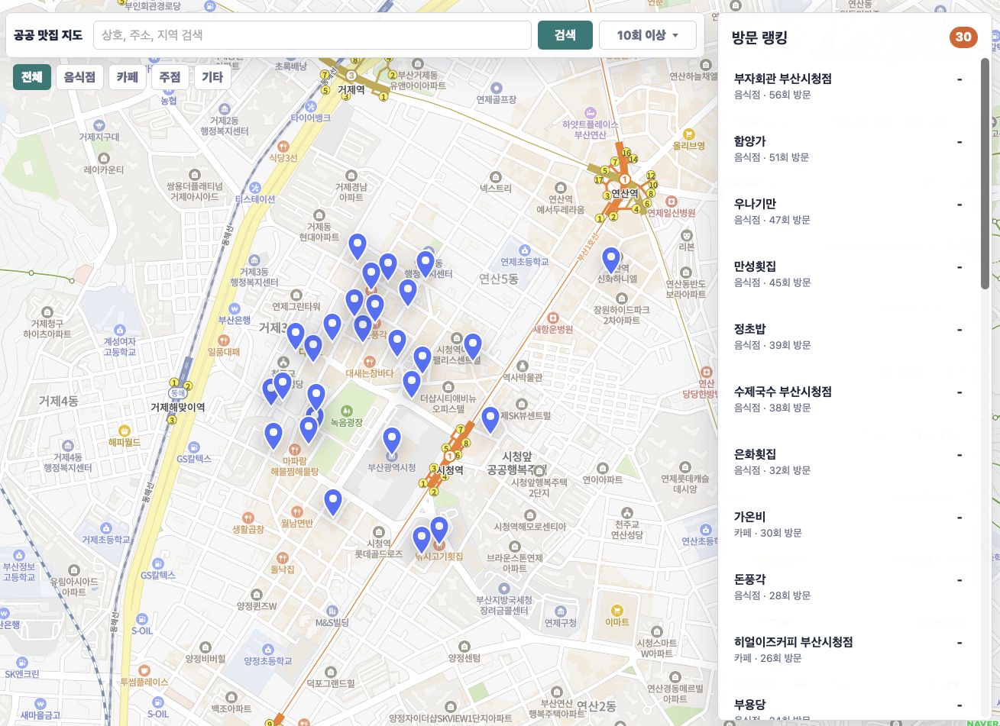

Education
2018 경운대학교 항공전자공학과 입학
2022 경운대학교 항공전자공학과 졸업
2026 세종대학교 전자정보통신공학과 편입
팀 프로젝트에서 리더 역할을 수행하며 요구사항 분석, 일정 관리, 구현, 테스트, 발표까지 프로젝트 전 과정을 주도한 경험이 있습니다.
Python, FastAPI, PostgreSQL을 활용한 백엔드 개발과 Ubuntu 서버 기반 배포 및 운영 경험을 보유하고 있습니다.
2018 경운대학교 항공전자공학과 입학
2022 경운대학교 항공전자공학과 졸업
2026 세종대학교 전자정보통신공학과 편입
2022 ~ 2025 대한민국 공군 장교 근무
공공기관 업무추진비 데이터를 활용한 신뢰도 높은 맛집 정보 서비스
공공기관 업무추진비 데이터를 자동으로 수집·분석하여 실제 이용한 음식점을 지도에서 제공하는 서비스입니다. 다양한 형식의 공개 데이터를 하나의 파이프라인으로 통합하고, 지도 API를 활용하여 음식점 정보를 검증합니다.

음성인식을 활용한 항공기 보조 제어 시스템 개발 및 학술대회 논문 발표
STT/TTS를 활용하여 항공기의 다양한 장치를 음성 명령으로 제어하는 보조 시스템을 설계하고 구현했습니다. Raspberry Pi 기반 하드웨어 제어 프로그램을 개발하고, 연구 결과를 학술대회 논문으로 발표했습니다.
한국컴퓨터정보학회 동계학술대회 우수논문상 (2021)
한국컴퓨터정보학회 하계학술대회 우수논문상 (2021)
정보처리기사 (2024.09)